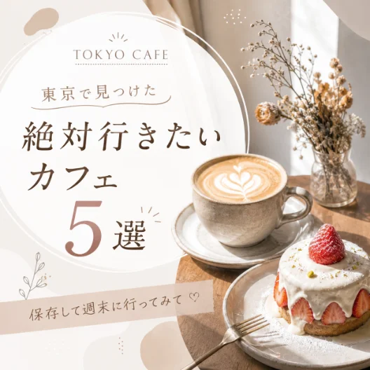
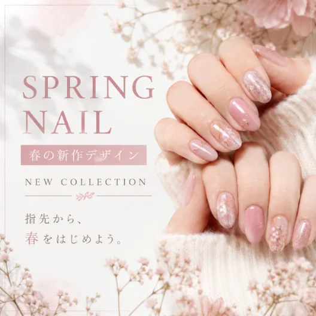

“好き”を、わたしの仕事に。
— MY WORK, MY LIFE.
副業・在宅ワークの
第一歩を、
から。
AI × Canva
無料Instagram講座
BEGINNER
未経験OK
FREE
完全無料
SUPPORT
質問し放題
LINEでかんたん30秒
LINEから30秒で無料申し込み ›MEDIA
運営会社・サービスの取り組みが
各種メディアで紹介されています
産経新聞
日テレ
NEWS24
Yahoo!
ニュース
当社は、これまで教育・スクール事業などを通して、新しいスキルを身につけたい方の学びをサポートしてきました。運営会社・サービスの取り組みは、新聞やニュースメディアにも取り上げられています。
WORK STYLE
Instagram投稿づくりで
身につくのは、
デザインだけではありません。
企画・文章・デザイン・運用。投稿をひとつ作る中で、仕事にもつながるスキルを身につけていきます。
01
IDEA
企画する力
02
WRITING
伝える力
03
DESIGN
形にする力
04
MANAGEMENT
運用する力
このスキルは、Instagramだけで終わりません。
投稿制作・SNS運用・在宅ワークなど、
「仕事に使えるスキル」へ。
3 WORK STYLES
たとえば、こんな働き方があります。
01
自分のInstagramを育てる
好きなことを発信して、アカウントを収益につなげる。アフィリエイト／PR／商品販売など。
WORK EXAMPLE
アフィリエイト・PRなど
月数千円〜数万円以上を目指すことも。
02
企業やお店のInstagramを
お手伝いする
企画／投稿画像制作／キャプション／投稿まで。美容室・飲食店・サロンなど幅広い業種で。
WORK EXAMPLE
Instagram運用サポート
月3万円〜10万円程度 / 1アカウント
03
Instagramの投稿画像を作る
まずは「投稿を作る」仕事から。慣れてきたら運用へ、少しずつ仕事の幅を広げられます。
WORK EXAMPLE
Instagram投稿制作
1投稿 1,000円〜5,000円程度
← 横にスワイプ
どれかひとつから始めればOK。
※成果や収益を保証するものではありません。
「やってみたい。でも、私にできるかな？」
そんな不安があっても大丈夫です。
何から始めればいいのか分からない
自分で投稿なんて作ったことがない
CanvaもChatGPTも使いこなせる自信がない
デザインセンスがないから無理かも……
そう感じている方も多いと思います。でも、最初から全部できる必要はありません。
なぜなら、AIがあなたの「苦手」を手伝ってくれるからです。
AI × CANVA
文章も、アイデアも、デザインも。
AIと一緒なら始めやすい。
デザイン経験がなくても大丈夫。ChatGPTとCanvaを使って、投稿づくりを3ステップで進めます。
01
THINK
ChatGPTと一緒に考える
投稿テーマや文章、構成、デザイン案までAIに相談。
テーマ / 文章 / 構成 / デザイン案
02
CREATE
Canvaで形にする
AIと考えた内容をもとに、Canvaで投稿画像に仕上げる。
03
COMPLETE
Instagram投稿が完成
文章とデザインを組み合わせれば、投稿できる画像が完成。
未経験でも、デザインに自信がなくても大丈夫。
AIが一緒に考えてくれるから、Instagram投稿はゼロから作れます。
WORKS
はじめてでも、
こんなInstagram投稿が作れるように。
BEAUTY
美容・コスメ
KNOW-HOW
ノウハウ・副業
LIFE
暮らし・ライフスタイル

GOURMET
カフェ・グルメ
CHILDCARE
子育て

SHOP
お店・サロン
PRODUCT
商品紹介・EC
← 横にスワイプして作例を見る
あなたの「好き」や得意なテーマも、Instagram投稿として形にできるようになります。
BEFORE / AFTER
「何もできない」から、
「ひとつ作れた」へ。
BEFORE
興味はある。でも、何から始めればいい？
特別なスキルがない / 文章が苦手 / デザインに自信がない / AIも使ったことがない
↓
AFTER
AIと一緒なら、Instagram投稿を形にできる。
投稿のアイデアを考えられる
文章・構成を作れる
デザイン案も考えられる
Canvaで投稿画像に仕上げられる
まずは、「ひとつ作れた」
という経験から。
その一歩が、副業・在宅ワークへの第一歩になります。
CURRICULUM
無料講座では、こんなことを学びます
全5STEPで、Instagram投稿の作り方を。
Instagramの基本を知る
どんな投稿があるのか、企業やお店はどう活用しているのか。
AIで投稿のアイデアを考える
ChatGPTで投稿テーマやアイデアを考える方法を学びます。
AIで文章・構成を作る
タイトル、投稿文章、複数枚の構成をAIと一緒に。
AIでデザインを考える
配色、フォント、写真の配置、レイアウトまで相談できます。
Canvaで投稿を完成させる
デザイン案をもとに、実際のInstagram投稿を制作します。
SUPPORT
ひとりで頑張らなくても、大丈夫。
未経験だからこそ、分からないことが出てくるのは当たり前。専任のプロが「作れる」まで一緒にサポートします。
01
専任のプロがサポート
途中で手が止まっても、相談しながら進められます。
02
何度でも質問OK
ChatGPT・Canva・投稿づくりまで気軽に質問できます。
03
「作れる」まで実践
実際に手を動かし、自分で投稿を作れるところまで。
ROADMAP
作れるようになったら、
次は仕事にチャレンジ。
01
LEARN
学ぶ
AI × Canvaで投稿制作を学ぶ。
→
02
CREATE
作る
実際に投稿をひとつ作ってみる。
→
03
PORTFOLIO
実績をつくる
制作物を増やし、実績をつくる。
→
04
FIRST WORK
小さな仕事に挑戦
できることから仕事にしてみる。
→
05
NEXT STEP
仕事の幅を広げる
SNS運用サポートなどへ広げる。
ANOTHER WAY
仕事を受けるだけが、
ゴールじゃない。
自分のInstagramを育てて、PRやアフィリエイトに挑戦する道も。
FREE TO START
はじめるために、
お金はかかりません。
講座も0円。使うのはChatGPTとCanvaの無料版だけ。特別なソフトや経験がなくても、そのまま始められます。
ChatGPT
テーマ・文章・構成・デザイン案を考える
無料版でOK
Canva
AIと考えた内容を投稿画像にする
無料版でOK
講座
未経験から投稿を1つ完成させる
参加費 0円
高額なデザインソフト 不要 ／ デザイン経験 不要 ／ AIの知識 不要
特別な準備はいりません。
今日から始められます。
参加費0円 ｜ 未経験OK ｜ 質問し放題
FOR YOU
ひとつでも当てはまったら、
この講座がおすすめです。
「ちょっとやってみたい」からで大丈夫。
副業を始めてみたい
何から始めればいいか分からない
在宅の仕事に興味がある
自分に合った働き方を見つけたい
InstagramやSNSが好き
好きをスキルにつなげたい
デザイン未経験
センスがなくても作れるように
AIを使ってみたい
仕事に活かせる使い方を知りたい
ひとりは少し不安
サポートを受けながら学びたい
経験も、センスも、特別なスキルもいりません。
「ちょっとやってみたい」が、最初の一歩です。
START
無料講座は、かんたん4STEPでスタート。
LINE登録から学習開始まで、迷わず進められます。
01
LINEに登録
まずはLINEを友だち追加。30秒ほどでかんたんに登録できます。
02
無料講座に申し込む
LINEから案内に沿って、必要事項を入力すれば申し込み完了。
03
Zoomで初回オリエンテーション
講座の進め方や学習方法を、専任スタッフと一緒に確認します。
ひとりで進めなくて大丈夫。
04
学習スタート
ChatGPTとCanvaを使って、実際にInstagram投稿を作り始めます。
Q & A
よくある質問
Q.Instagram初心者でも大丈夫ですか？
はい。Instagramの基本から学べるので、普段は見るだけという方でも参加できます。
Q.ChatGPTやCanvaを使ったことがありません。
問題ありません。どちらも初めての方でも取り組める内容から、分かりやすく進めていきます。
Q.デザインセンスがなくても大丈夫ですか？
大丈夫です。配色・フォント・写真の配置・レイアウトなども、ChatGPTに相談しながら作っていきます。
Q.本当に無料ですか？
はい。本講座は無料で受講いただけます。ChatGPT・Canvaも無料版で学習できます。
Q.分からないことがあったら質問できますか？
はい。学習中に分からないことがあれば、専任のプロに何度でも質問できます。
Q.講座を受ければ、必ず仕事ができますか？
仕事の獲得や収益を保証する講座ではありません。まずは自分で投稿を作れるようになり、そこから投稿制作やInstagram運用などの仕事に挑戦していけます。
✧ あなたの「やってみたい」を、今日から。
「私にもできるかも。」を、
今日、最初の一歩に。
特別なスキルも、経験もいりません。
AIと一緒なら、「何を作ろう」から始められます。
ひとつ作れたら、昨日とは少し違う。
その小さな経験が、いつか働き方の選択肢になるかもしれません。
まずは、
Instagram投稿をひとつ作るところから。
参加費0円 ｜ 未経験OK ｜ 質問し放題
※本講座は、仕事・案件・収益の獲得を保証するものではありません。